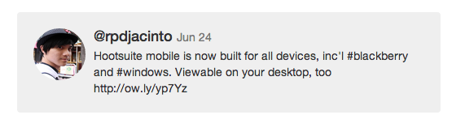

Hootsuite & Backbone.js
Rafael Jacinto
APSC 411
Hi! I'm Rafael Jacinto
4th year Computer Engineering Student
Enter Backbone.js
Backbone.js
It's a Javascript framework lays the foundation for building powerful, interactive web applications.
Main Components
- Model
- View
- Collection
Let's build a Twitter Stream
The Backbone Model
A container for interactive data
What's in a Tweet?
- Username
- Avatar URL
- URL
- Date Sent
- Message Text
- # of Times Favourited
- # of Times Retweeted
The Tweet Class
var Tweet = Backbone.Model.extend({
defaults: {
username: '',
avatar: '',
message: '',
url: '',
date: '',
favourites: 0,
retweets: 0
}
});
Creating Tweets
var t = new Tweet({
username: 'rpdjacinto',
avatar: 'https://pbs.twimg.com/profile_images/2521984794/owx2zxnh42jh5zd0l59s.jpeg',
message: 'Hootsuite mobile is now built for all devices, inc'l #blackberry and #windows. Viewable on your desktop, too http://ow.ly/yp7Yz',
url: 'https://twitter.com/rpdjacinto/status/481506191210975232',
date: 'Jul 24',
favourites: 1,
retweets: 2
});
Important Functions
- get() eg. var myName = myTweet.get('username');
- set() eg. myTweet.set('username', 'rpdjacinto');
- save() save model data to server
- fetch() get model data from server
The Backbone Collection
An ordered set of Models
The Tweets Collection
var Tweets = Backbone.Collection.extend({
model: Tweet
});
The Tweets Collection
var tweet1 = new Tweet();
var tweet2 = new Tweet();
var tweet3 = new Tweet();
var myTweets = new Tweets([tweet1, tweet2, tweet3]);
The Tweets Collection
var myTweets = new Tweets([], {
url: '/tweets/'
});
myTweets.fetch();
Important Functions
- add() and remove(): Adding or removing one or more models
- push() and pop(): using the Collection as a Stack
- get() and at(): retrieve one model by id, or index
- where() eg. myTweets.where({username: 'rpdjacinto'});
- each() perform an operation on each model
How do we visualize this?
The Backbone View
Binding Data to Visual Elements
HTML Example

HTML Example

@rpdjacinto Jun 24
Hootsuite mobile is now built for all devices, inc'l #blackberry and #windows. Viewable on your desktop, too http://ow.ly/yp7Yz
Templating
The Tweet View
var TweetView = Backbone.View.extend({
tagName: 'div',
className: 'tweet'
});
The Tweet View
var TweetView = Backbone.View.extend({
tagName: 'div',
className: 'tweet'
template: _.template($('#tweet-view').html()),
});
The Tweet View
var TweetView = Backbone.View.extend({
tagName: 'div',
className: 'tweet'
template: _.template($('#tweet-view').html()),
initialize: function () {
// Whenever the model changes, let's re-render the HTML
this.listenTo(this.model, 'change', this.render);
},
});
The Tweet View
var TweetView = Backbone.View.extend({
tagName: 'div',
className: 'tweet',
template: _.template($('#tweet-view').html()),
initialize: function () {
// Whenever the model changes, let's re-render the HTML
this.listenTo(this.model, 'change', this.render);
},
render: function () {
// Let's populate our template with our model's data
this.$el.html(this.template(this.model.toJSON()));
}
});
The TwitterStream View
The Tweet View
var TwitterStreamView = Backbone.View.extend({
el: $('#twitterStream'),
template: _.template($('#tweet-view').html()),
initialize: function () {
// Fetch our tweets from the server
this.tweets = new Tweets();
tweets.fetch();
},
render: function () {
// Append a mtweetView for each tweet we retrieved
this.$el.html('');
this.tweets.each(function (tweet) {
var tweetView = new TweetView({ model: tweet });
this.$el.append(tweetView.render().el);
});
}
});
// Create an instance and watch the magic happen!
var twitterStream = new TwitterStreamView();